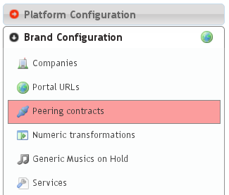
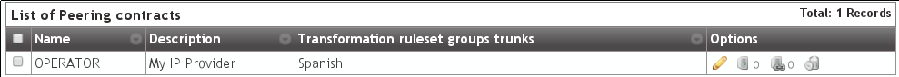
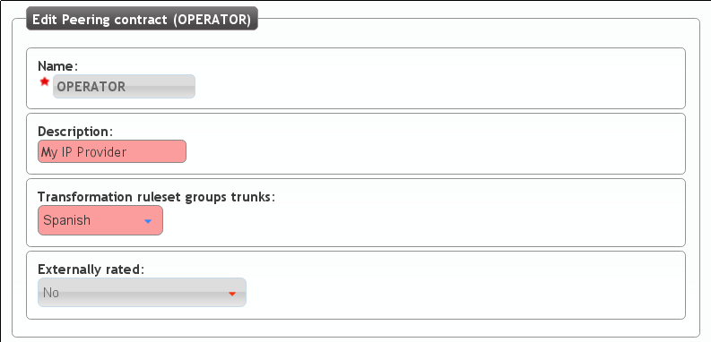
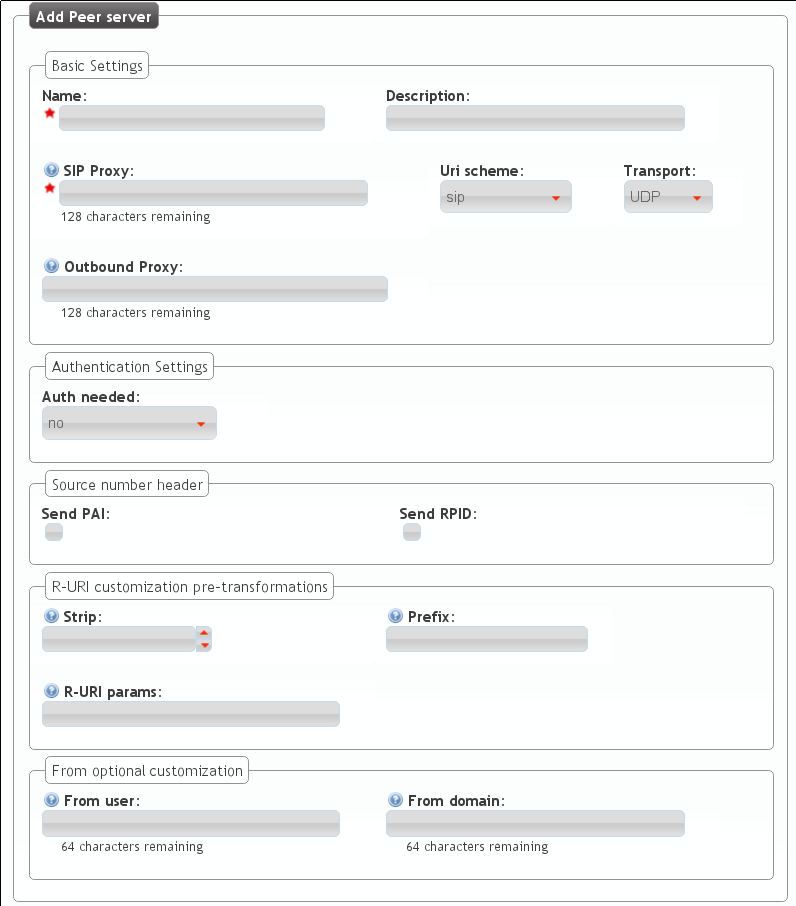
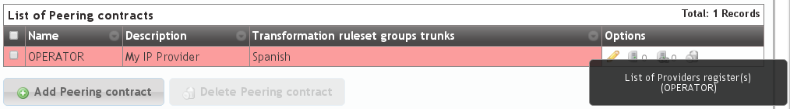
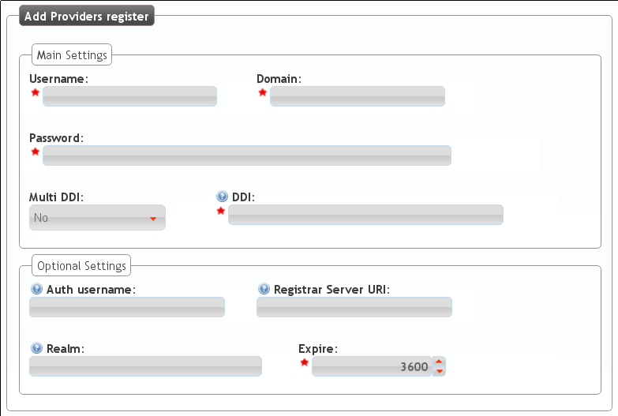

Configuring a Peering Contract¶
We understand a Peering contract the agreeming between a Brand Operator and a VoIP Provider to make and receive calls.
IvozProvider is ready to integrate with IP providers created on the secteion Perring contracts:
Peering contract Basic data¶
These are the basic information of a Peering contract:
If we edit it, well see something like this:
- Name
- Used to reference this Peering contract.
- Description
- Optional field with any required extra information.
- Numeric Transformation
- Transformation that will be applied to the origin and destination of the incoming and outgoing numbers that use this Peering contact (see Numeric transformations).
- External tarification
- This setting requires the external tarification module and allows tarification on special numbers. This module is not standard so don’t hesitate in contact us if you are interested.
Important
Fields marked with a red start are mandatory.
Peer Servers¶
A Peer Server is a SIP server associated to an IP Provider. In order to add some Peer Servers for the Peer Contract that have just created, we only have to use the following section:

As displayed by the zero counter, no Peer Serve has been created yet:
- Name
- Used to identify this Peer Server
- Description
- Optional field with any required extra information.
- SIP Proxy
- IP address (or DNS registry) of the Peer Server. You can also specify a port if it’s different from 5060.
- URI Scheme
- Supported schemes are sip and sips. Use ‘sip’ in case of doubt.
- Transport
- Supported transport protocols. Use ‘udp’ in case of doubt.
- Outbound Proxy
- Usually this is left empty. It can be filled with the IP address of the SIP Proxy domain (to avoid DNS resolution, but keeping the domain in the SIP messages). It works like a web proxy: instead of sending the SIP messages to destination SIP Proxy, they will be sent to the IP:PORT of this field.
- Requires Authentication
- Some Peering contracts validate our platform by IP, others require each session that we want to establish. For this last case, this section allows to configure user and password for this authentication.
- Call Origin Header
- Some Providers get origin from SIP From header. Others use the From header for accounting and need extra headers to identify the origin. In case of doubt leave PAI checked.
- R-URI Transformations before numeric transformations
- This setting allow static changes to the destination of the calls before applying numeric transformation rules mentioned in Numeric transformations. Some digits can be stripped from the begining, add a prefix, or even, add extra parameters to the URI followinging the given format. In case of doubt, leave empty.
- From header customization
- For those providers that show origin in other headers (PAI/RPID), it is possible that request that From User have the account code being used and from domain their SIP domain. In case of doubt, leave empty.
Tip
There are many fields to establish peering with multiple kind of providers, but usually with the name and SIP Proxy will be enough (for those that validate our platform by IP) and Authentication (for those that won’t).
Warning
In case of defining multiple Peering Servers for a single Peering Contract, IvozProvider will balance and failover using all of them. Like with Application Servers, it will disable those who doesn’t respond to our requests.
SIP Register¶
Some providerss require a SIP Register active in order to receive incoming calls to our DDIs. Some of them, even require this register in order to process our outgoing calls through their services.
Note
IvozProvider supports any kind of peering, but we highly recomend peer to peer peerings: without authentication, without registry and validated by IP. This will avoid unnecessary traffic (authentication in each session and preriodic registers) and simplifies its configuration, just by leaving most of the fields by default.
For this reason, IvozProvider allows periodic SIP register configuration in the following section:
If we create a new one, the following screen will be displayed:
- Username
- Account number or similar provider by the provider that requires SIP register.
- Domain
- Domain or IP of the registar server. Usually the same as the SIP proxy of the Peer server.
- DDI
- This will be sent in the SIP Contact header and must be unique in all the platform. For Peering contracts with an associated DDI, it is recommended to enter that DDI. In case of multiples DDI for the same Peering Contract, use any of them. If no DDI is associated with this Peering Contract just enter an unique numeric value.
- User
- Authentication user. Most of the time it’s the same as username, so it’s recommended to leave empty.
- Register server URI
- Usually this can be left empty, as it can be obtained from the Domain. If it is not the case, enter the IP address with the ‘sip:’ prefix.
- Realm
- Leave empty to accept the authentication realm proposed by the provider. Define only if you are familiar to the authentication mechanism used in SIP.
- Expire
- Default suggested register expire time.
Tip
Similar to the Peer Servers, there are lots of fields in the screen. You must have into account that most of the provider doesn’t require register , and those who does, will only use user, domain and password.